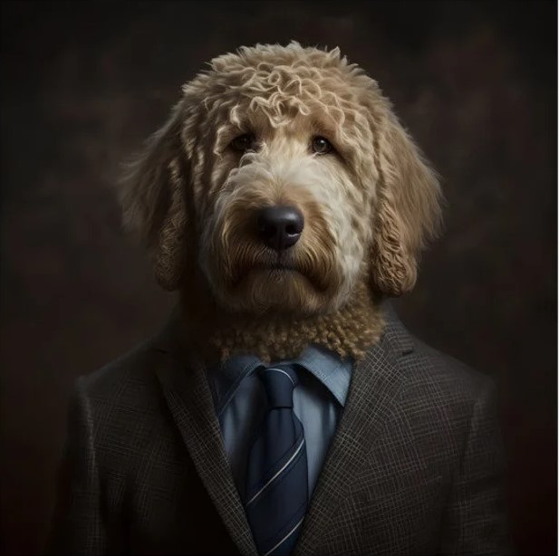
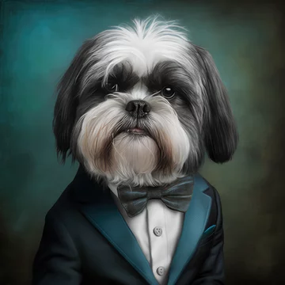
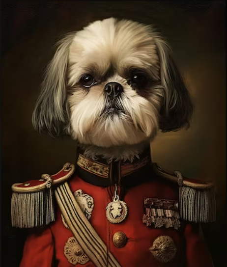

Team

Stephen Boorman
Chief Cuddler Officer
"The better I get to know men,
the more I find myself loving dogs."
Fav Dog: Golden Doodle

Jared Baca
Guardian of the Kibble Kingdom
"Dogs are not our whole life,
but they make our lives whole."
Fav Dog: Black Lab

Sri Nikhil Reddy Gudibandi
Master of Paw-sonal Hygiene
"Dogs do speak,
but only to those who know how to listen."
Fav Dog: Golden Retriever
Shiyu Wang
Chief Belly Rub Officer
"A dog is the only thing on earth
that loves you more than he loves himself."
Fav Dog: Golden Retriever

Sri Divya Raparala
Head Scratcher-in-Chief
"The love of a dog is a pure thing. He gives you a trust which is
total. You must not betray it."
Fav Dog: Shih Tzu

Rubeena Riyas
Fur Baby Wrangler
"Once you have had a wonderful dog,
a life without one is a life diminished."
Fav Dog: Shih Tzu